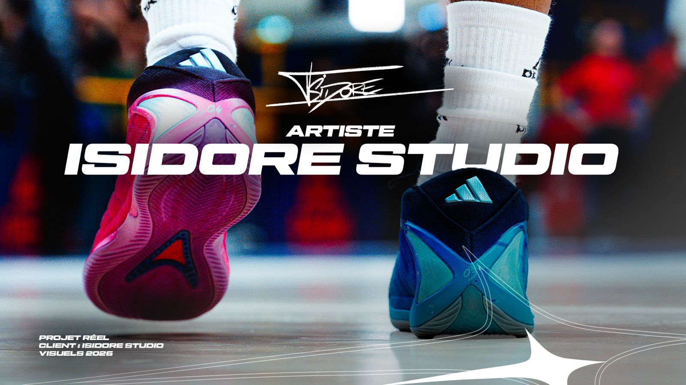
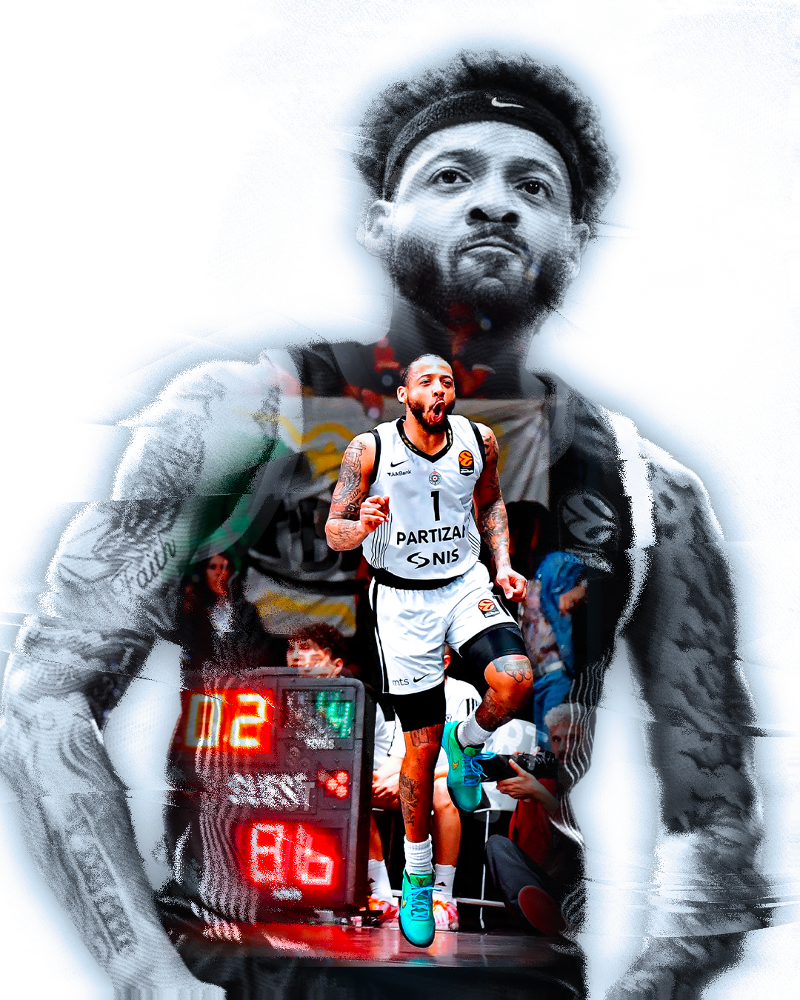
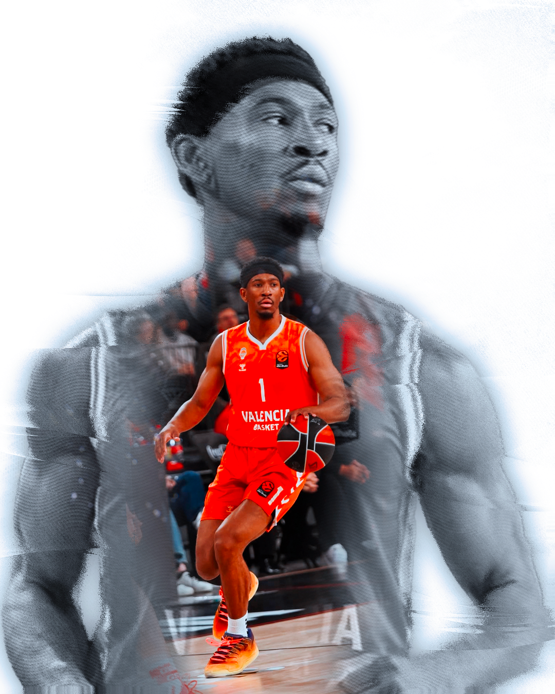
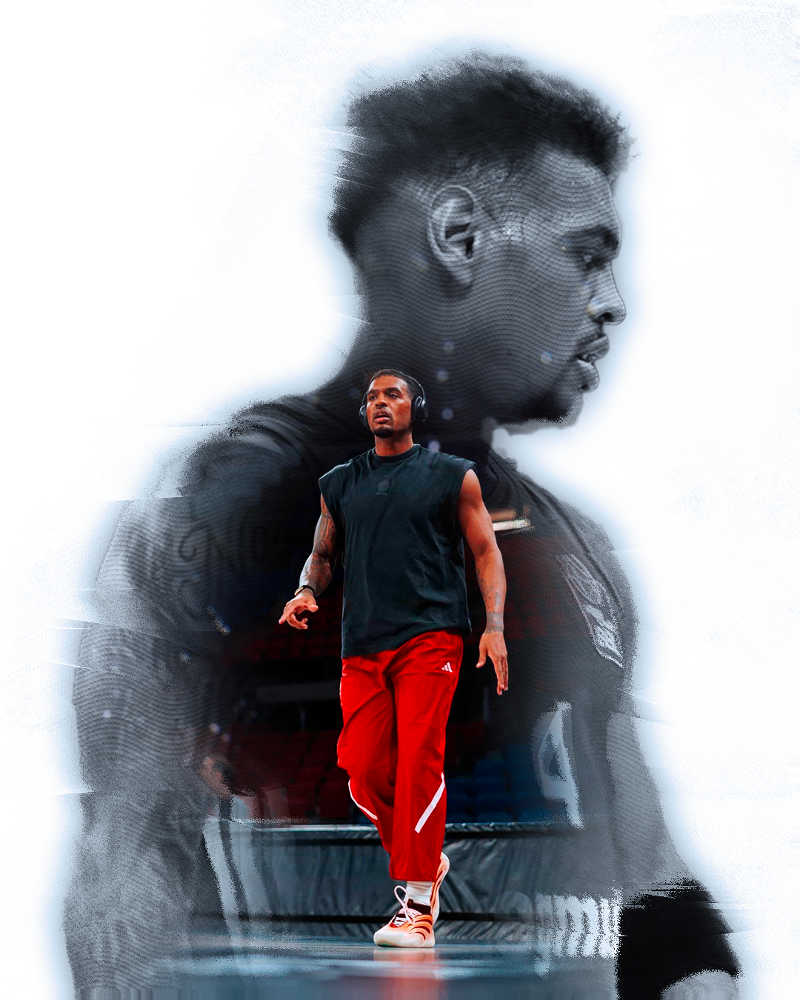

Pour ce projet, l’objectif était de créer une série de visuels capables de renforcer immédiatement l’impact de la communication, tout en gardant une vraie cohérence graphique entre les différents supports.
L’idée était de proposer une direction plus forte, plus lisible et plus immersive, avec une présence visuelle marquante sur les affiches, réseaux sociaux et supports événementiels.







Autres projets